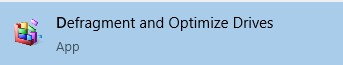
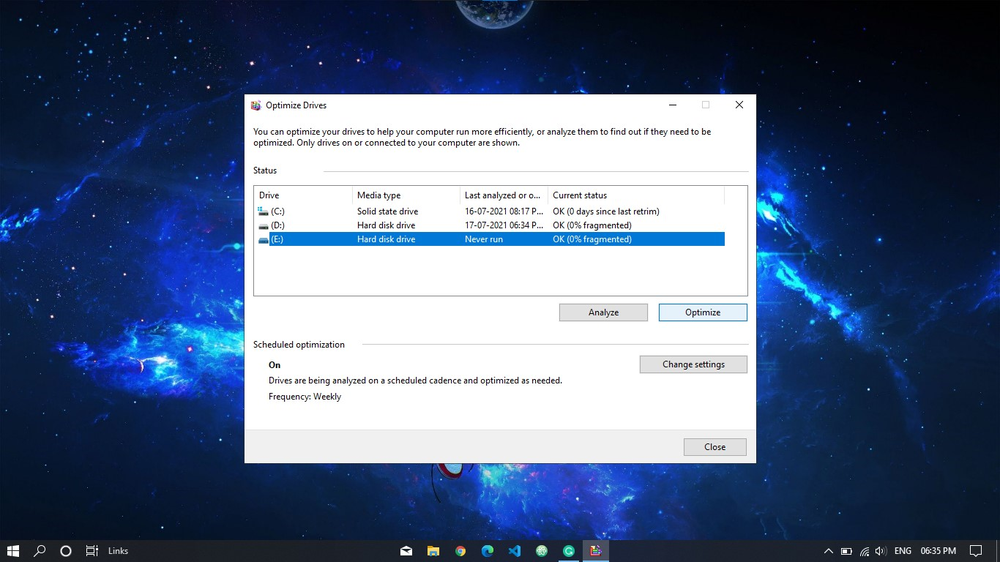

Defragment and Optimize Drives
Optimization is a process of rearranging and rewriting(data, software, etc) to improve the efficiency of retrieval or processing. It is important to optimize your drives for better performance.
How to optimize your drives?
Windows has an amazing feature of optimization. To optimize your drives, just click on the search bar and search "Defragment and Optimize Drives" and run the app.

Select the fragmented drive and click on "Optimize". Restart your computer and you will notice that your computer is working faster than before.
